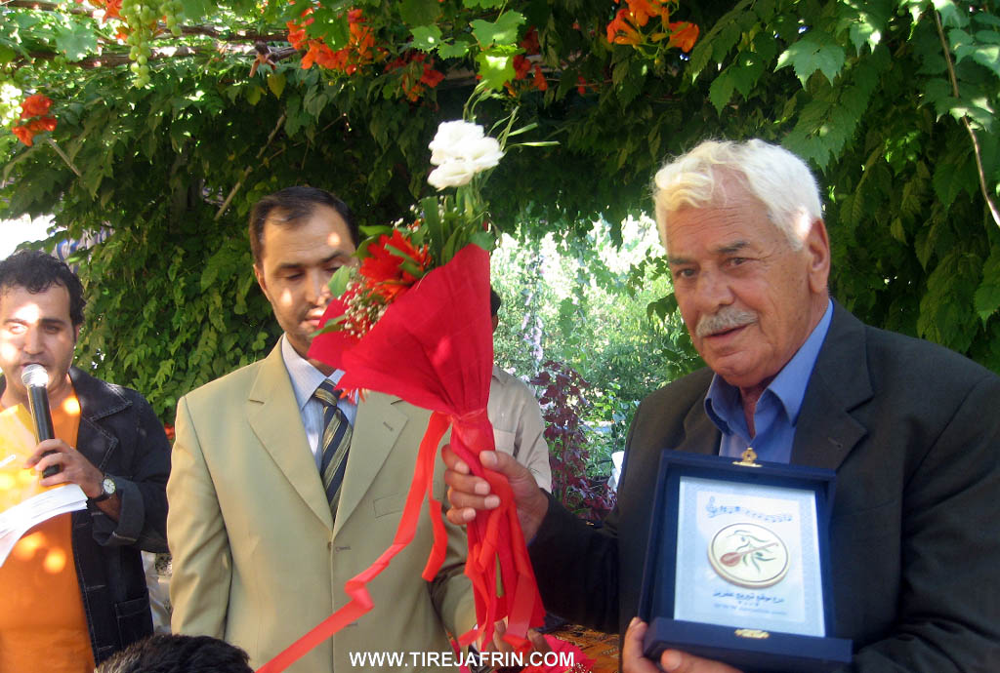

General Information
Nahiya (Subdistrict)
Bilbilê
Also Known As
Deir Hasan, Hasan Deirli, Hasandêrê, Hesen Dêra, Hesen Dêro, Hesendêra, Kefnûre, حسن ديرلي, دير حسن, Ḧesen Dêra, حسن, حسنديراه
Tribes
Hesenan
Families, Clans, etc.
Bakro, Bekira, Bekra, Diyapiyê, Elî Osman, Hesika, Heska, Kiciklara, Mala Kicikê, Mala Memê Bilbilî, Mala Mihemed Reşo, Mala Usê Elo, Mame Mîsakê, Mehmûd Şevder, Seya, Seyîda, Xalima, Xelema

Photos



Basic Information about Ĥesen Dêra
Source: Ax û Welat
Etymology: Named after the Hesenan tribe and a Rûm church ruin found at the site
Foundation Date/Period: 300 to 400 years ago
Caves: Şkefta Sûr, Şkefta Kafir, Şkefta Bûka
Number of Caves: 7
Springs: Kaniya Bekirê Xelê, Kaniya Kuxikê
Hills: Çiyayê Hawarê, Çiyayê Qirigulê
Shrines: Şkefta Bûka
Ruins: Kela, Sûretê Qîzkê, Kela Qîzkê, Sûretê Şemşûn
Wells: Bîra Meydana Bîrê
Other Landmarks: Meydana Bîrê
Source: Khalil Sino
Etymology: Derived from an ancestor named Hesen who came from Mûş and settled at a church (Dêr) located at the site
Springs: Kaniya Hesen Dêra
Ruins: Dêr
Wells: Bîrê d'avê
Other Landmarks: Tînsokî
Summaries
I. Summary from TirejAfrin Site (English) of Ĥesen Dêra
Source: https://www.tirejafrin.com/site/kura%20afrin%20%20%20bilbile%20-%20hasan%20derle.htm
It is stated in the book جبل الكرد (عفرين) دراسة جغرافية Çiyayê Kurmênc (Efrîn): A Geographical Study: Ĥesendra, Hesen Dêrlî, Deyr Hesen / 1947 inhabitants, 480m elevation, 150 houses, 17km distance /:
Hasan Dêra: Hasan is the name of the first person who resided at the site, so the village was named after him and the archaeological attribute of the place (dêr, meaning monastery).
It is a medium sized village located at the bottom of the eastern slope of Çiyayê Hawar. It is separated from the mountain by the valley of Geliyê Eşûnê. Near it, on the eastern slope of Çiyayê Hawar, there are caves, drawings engraved in the rock, and obliterated ruins.
It is stated in the book عفرين .... نهرها وروابيها الخضراء Efrîn... Her River and Her Green Hills: Hesen Dêrlî is a village in Çiyayê Kurmênc following the township of Bilbile, district of Efrîn, governorate of Heleb. It is a large and old village located at the bottom of the furrowed eastern slope of the limestone Çiyayê Hawar, where the inclination is slight and the soil is clay, suitable for agriculture and grazing. It is 17km away from the town of Bilbile towards the southeast. It is bordered to the north by Çiyayê Hawar and the village of Qorî Gol; to the south by Geliyê Sîlê, a high mountain range, and the village of Şorbe Oxlî; to the west by Geliyê Sîlê, Çiyayê Hawar, and the village of Şêxler Obasî; and to the east by Geliyê Sîlê and the village of Naza Uşaxî.
The number of its houses reaches approximately 125 houses, and its age is approximately 400 years. Its old houses are of stone and mud with flat wooden roofs, while the modern ones are cement and are expanding towards the east. An electricity network, a primary school, and a mosque in the center of the village are available. Most of its residents work in the cultivation of olives, grains, and legumes via rain fed agriculture (150 hectares), alongside raising sheep and goats. Its people drink from cisterns in which rainwater collects. The road from it to the town of Bilbile is paved.
Among the families present in the village are: Bakro (Bekra), Seya (the family of the late artist Elî Tico), Xalima, Kiciklara, and Hesika.
Among the holders of higher degrees in the village are Miss Zînat Xelîl daughter of Sefer (Master's in French Language from the University of Heleb) and Zelûx Xelîl daughter of Sefer (Master's in French Language). Among the social figures are Ismet Şêxo, Ebdulkerîm Reşîd (Ebû Rêzan), Mihemed Heso (Ebû Tac), and Ebdulkerîm Heso (Ebû Şivan). Notable figures also include the late artist Mihemed Elî Tico, the poet Berxwedan Ebdulkerîm Heso, and the licentiate in Mathematics (Informatics) and educational qualification diploma holder Mr. Mihemed Heso son of Arif (owner of the Yasmin Computer Office). Among the early strugglers was the late Ebdulhemîd Mistefa Ete. Among the skilled tradesmen is Mr. Xelîl Reşo (Ebû Behrî), who is considered one of the early weapons repairmen in the region.
The mukhtar of the village is Mihemed Seîd Heso.
Sources of Information:
- Book: جبل الكرد (عفرين) دراسة جغرافية Çiyayê Kurmênc (Efrîn): A Geographical Study by د. محمد عبدو علي Dr. Mihemed Ebdo Elî.
- Book: عفرين .... نهرها وروابيها الخضراء Efrîn... Her River and Her Green Hills by the writer عبدالرحمن محمد Ebdulrehman Mihemed from the village of Qetme.
- Studies of Navenda Tirej Soft / Ebdulrehman Hacî Osman.
- Some residents of the villages.
Preparation and Execution: Director of the Tirej Efrîn website: Ebdulrehman Hacî Osman 20/12/2013
II. Summary of Ĥesen Dêra from Ax û Welat
Source: https://www.youtube.com/watch?v=7Eh-UgUNgIc
The village of Hesen Dêra is situated in the Bilbil district within the foothills of Çiyayê Hawarê in northwestern Syria. According to local elders the village was founded between three and four centuries ago by Seyîd Xan a leader from the Hesenan tribe. The name Hesen Dêra reflects this dual heritage combining the tribal name Hesenan with Dêra which refers to the ruins of a Rûm church found at the location when the tribe first settled. The village was originally established in a river valley that once flowed with water from springs and melted snow though these sources have since dried up.
The social structure of Hesen Dêra remains deeply rooted in its tribal origins. The founding lineage is the Seyîda family named after Seyîd Xan. Over time other families established themselves including Bekira, Xelema, and Heska. Later arrivals who integrated into the community include Mala Mihemed Reşo, Mala Usê Elo, Mala Memê Bilbilî, and Mala Kicikê. Historical disputes and community affairs were traditionally managed by village elders such as Hemîdê Elî Tico, Hûrikê Bekir, Seyîdê Şêxê, Ibîşê Çêwîş, and Şêxê Hemzikê. Education in the past was conducted by a Xoce who taught children reading and the Qur'an before modern schools were established.
The landscape around Hesen Dêra is rich with historical and natural landmarks. The village square known as Meydana Bîrê centers around a community well dug in 1957. High in the surrounding Çiyayê Hawarê there are significant archaeological sites including a rock relief locally known as Sûretê Qîzkê or Kela Qîzkê. Visiting archaeologists identified this relief as Şemşûn believing it depicts Samson. Nearby ruins include a site simply called Kela. The area contains numerous caves such as Şkefta Sûr which is also called Şkefta Kafir by local Muslim residents who associate it with non believers. The most significant cavern is Şkefta Bûka a massive space covering 400 square meters. It was historically used for religious rituals by Êzdî people and the Hûriyan civilization and later served as a shelter for sheep and a defensive position during conflicts.
Water sources played a vital role in local lore. Kaniya Kuxikê was a spring believed to have healing properties specifically for curing whooping cough while Kaniya Bekirê Xelê served as another water source near Çiyayê Qirigulê. Culturally Hesen Dêra is renowned as the home of the late Kurdish artist Mihemed Elî Tico. Although his father originated from Gundê Derwîş Mihemed Elî Tico was born and lived in Hesen Dêra influencing the region's music with his distinct style before passing away in 2012. His grave is located in the village and remains a place of respect for local musicians and residents.
II. Summary of Ĥesen Dêra from Khalil Sino
Source: https://www.youtube.com/watch?v=i4p8km0hPHo
The village of Hesen Dêra is located in the Efrîn region, approximately three kilometers from the city of Efrîn and near the town of Meydankê. The village is currently home to about 125 inhabited households, though the total number of houses stands at 150. The community is well known for its local spring, referred to as the Kaniya Hesen Dêra, and maintains a single school and well.
According to the oral history provided by the elder Mistefa 'Elî Osman, the origins of the village trace back to ancestors who migrated from Mûş. These ancestors traveled through 'Egerben and Girbenavê before dispersing to different locations such as Hecîka and Kûbanê. One individual named Hesen arrived at the current site, where a church (Dêr) was located. He settled there, and the village subsequently took the name Hesen Dêra, meaning "Hesen of the Church" or "The Church of Hesen."
The history of Hesen Dêra is marked by periods of hardship. Elders recall times of severe famine when residents were forced to walk to Kefergelbînê to gather plants for food. Historically, a primary economic activity for the men of the village was charcoal production ("komir"), which involved groups of men working in the surrounding forests.
A central figure in the collective memory of the village is Bavê Kal, also known as 'Altê Cû or Bavê Kal Elî. Born in 1930 and passing away in 2012, he was a revered community member known for his wit, storytelling, and skill with the Tembûr. He was a shepherd and farmer who embodied the rural culture of the area. Bavê Kal maintained a close friendship with the famous Kurdish singer Cemîl Horo. The documentary recounts a meeting between them at a restaurant in Kefir Cenê, where Bavê Kal and his companions were warmly welcomed by Cemîl Horo, leading to an evening of traditional music and singing.
The village retains a strong connection to its material heritage. A resident named Şêxo maintains a private museum room filled with historical artifacts collected over many years. This collection includes items from the Diyapiyê family and Mame Mîsakê, such as Ottoman era pistols, silver tobacco boxes, copper coffee pots ("dîbekê qehwê"), and traditional agricultural tools. Social customs have evolved over time; while weddings historically featured the bride riding a horse to her new home, modern ceremonies now utilize cars, a change noted with nostalgia by the elderly resident Xaltîka Hûrê.
Transcriptions and Subtitles
| Source | Video | Subtitles | Transcript |
|---|---|---|---|
| Ax û Welat 1 | Watch Video | Download SRT | View Transcript |
| Khalil Sino 1 | Watch Video | Download SRT | View Transcript |
Foundation/Origin Information of Ĥesen Dêra
Founded by members of the Hesena tribe who originated from Southern Kurdistan (Başûr).
Source: Ax û Walat Transcript
Possible Village Name Meaning of Ĥesen Dêra
Hasan is the name of the first person who settled in the location, and "Dêra" refers to the archaeological attribute of the place (Deir/monastery).
Source: TirejAfrin Site
The name "Hesendêra" is a compound, derived from the tribe's name ("Hesen") and a pre-existing church or monastery ("dêra") that stood on the site.
Source: Ax û Walat Transcript
V. Links
- Tirej Afrin:
https://www.tirejafrin.com/site/kura%20afrin%20%20%20bilbile%20-%20hasan%20derle.htm - Ax û Welat:
https://www.youtube.com/watch?v=DMM7WmwuTCc - Video:
https://www.youtube.com/watch?v=-QkSIVzGmF4 - Link:
https://www.youtube.com/watch?v=7Eh-UgUNgIc - Khalil Sino:
https://www.youtube.com/watch?v=i4p8km0hPHo